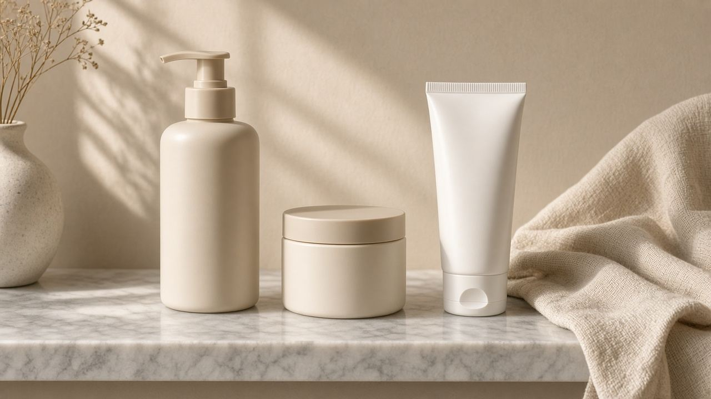
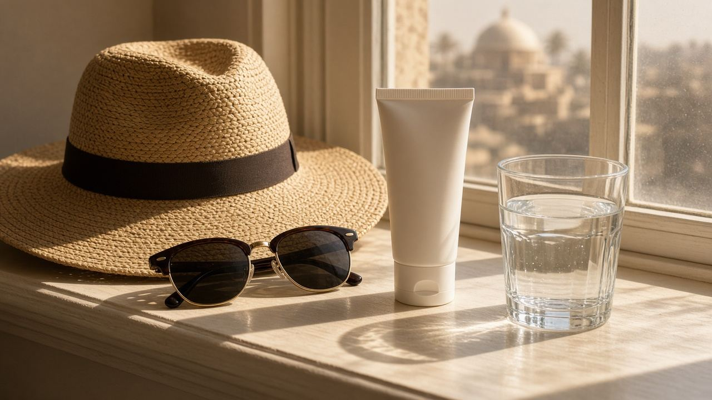
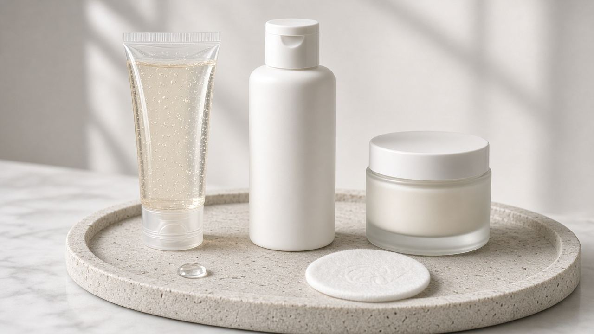
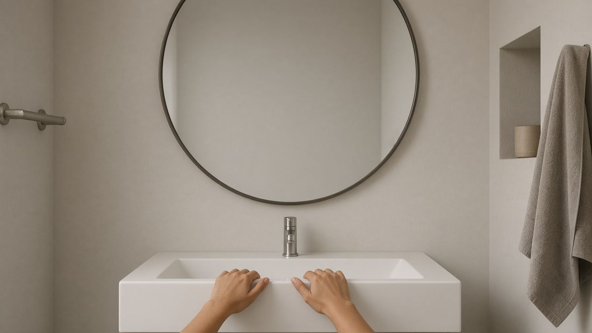
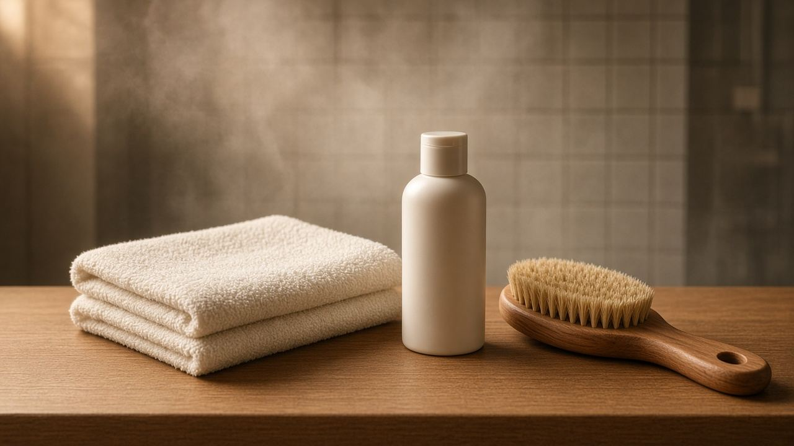
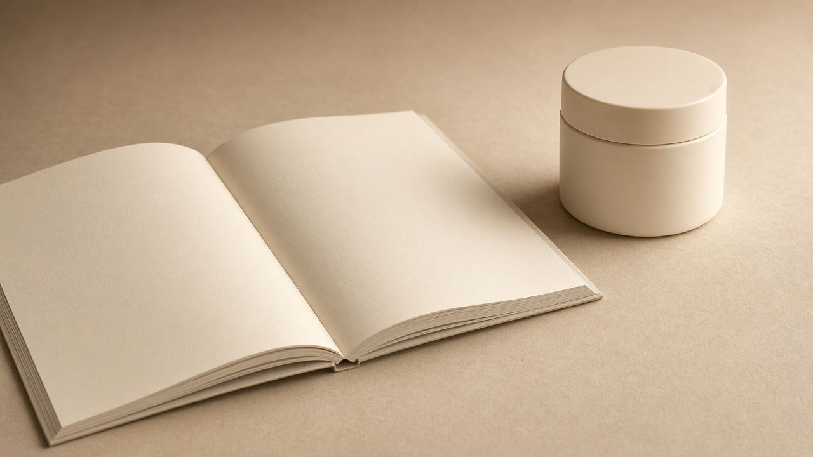

جمال
الجمال
عناية البشرة والجسم والشعر هنا روتين يومي: غسيل، وترطيب، وشمس، وقراءة الإعلان قبل الشراء. الكلام عام ومش كشف جلدية. لو في مرض جلدي أو حساسية، الطبيب يشوف الحالة.
ده روتين يومي، مش كشف. لو بشرتك فيها طفح أو حساسية أو حَب تحت الجلد، روح لطبيب جلدية.

بشرةروتين بشرة من تلات خطوات يكفي أغلب الناس
غسيل لطيف، ترطيب، وواقي شمس. ليه الخطوات التلاتة أهم من رف مليان عبوات، وإمتى الروتين البسيط مش كفاية.

بشرةواقي الشمس: ليه هو أهم خطوة نهارية
SPF 30 وطيف واسع، وكمية تكفي الوش والرقبة، وإعادة كل ساعتين في الشمس. الظل والقبعة جزء من الحماية مش بديل وحيد.

بشرةبشرة دهنية وجافة وحساسة: الفرق من غير منتجات سحرية
إزاي تميّز نوع بشرتك من غير اختبار إعلان، وليه الدهنية تحتاج ترطيب، وإمتى الحساسية تخلّيك توقف العطور والأحماض.

بشرةالحبوب: متعصرهاش، وإمتى الموضوع محتاج طبيب جلدية
العصر بيزود الالتهاب والتصبغ. مواد شائعة من غير روشتة، وحالات الحبوب العميقة اللي متتعالجش في البيت.

جسدالعناية بالجسم بعد الشاور: فاتر، ترطيب، وهدوم قطن
الجلد اللي على الدراع والساق بيحتاج طبقة دهون بعد الشاور، مش مقشر يومي. وإيه الفرق بين ريحة الجسم ونظافته.
 شعر
شعرالشعر والفروة: اغسل على قد فروتك مش على قد الإعلان
عدد مرات الغسيل بيتحدد بالفروة، والتصفيفة المشدودة بتضعف الشعر من الجذور، وتساقط مفاجئ يستاهل كشف.

بشرةإزاي تقرا إعلان منتج تجميل قبل ما تشتريه
قبل وبعد، وفلاتر، وجملة «مثبت إكلينيكيًا» من غير دراسة تقدر تقراها. إيه اللي يتساب على الرف وإيه اللي يستاهل التجربة.